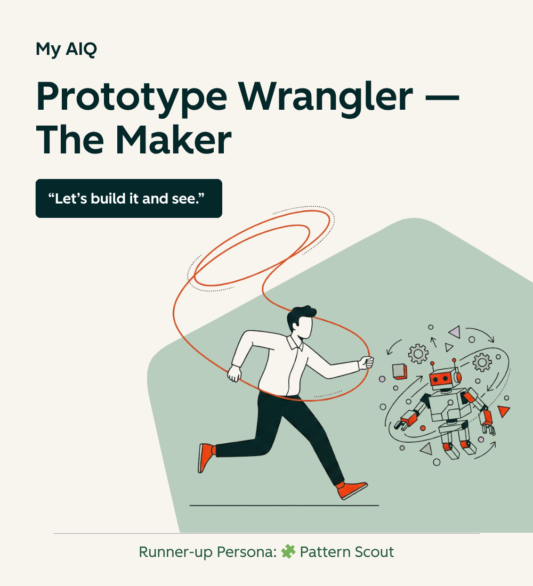

The Challenge
The original ask was to define AI fluency levels and create more advanced training.
But that surfaced a deeper issue: without understanding how people were already using AI, any fluency model would be abstract and likely wrong.
The real problem became:
How might we understand real AI behavior across the organization while also creating something genuinely useful for employees in the moment?
That meant solving two competing needs at once:
- Employees needed something that felt helpful, not evaluative
- The organization needed signal that was specific and honest enough to inform strategy
Those goals don't naturally align. The design had to hold both.
My Approach
AIQ Up was shaped by four core design decisions.
1. Start with real work, not abstract questions
Instead of asking broad questions about AI usage, the system asks for one specific example of how someone used AI in their work.
This produces richer signal — goals, workflow, confidence, outcomes — while grounding the experience in something real and meaningful.
2. Give value before asking for data
I didn't want this to feel like a survey disguised as a bot.
Users first receive:
- a persona identity
- validation of what they're doing well
- practical coaching tied to their example
The organizational insight emerges as a byproduct of a useful experience, not the point of it.
3. Use identity to motivate reflection
Rather than flattening AI usage into a single maturity scale, AIQ Up introduces behavioral personas.
These give people:
- a recognizable way to see themselves
- a shared language to talk about AI usage
- a way to reflect without feeling evaluated
It also made repeat use meaningful — different examples can lead to different personas.
4. Make coaching safe and adjustable
This was designed to feel like reflection, not assessment.
Key choices:
- personas are behavioral, not permanent
- levels shape coaching ambition, not scores
- users can revise coaching if it doesn't feel right
That last one matters more than it sounds. It signals that disagreement is expected, not exceptional, and gives users agency.
AIQ Up promotional video created to introduce the product to HubSpot employees.
Key Design Tensions
The interesting part of this project wasn't just the flow — it was the tradeoffs inside it.
- Reflection vs. evaluation
Needed to feel insightful without feeling like it was judging people - Signal quality vs. user effort
Needed rich behavioral data without creating a long or heavy experience - Personal value vs. organizational value
Had to be useful even if the company learned nothing from it - Recognition vs. rigidity
Personas needed to feel accurate without defining someone permanently - Insight vs. safety
Needed meaningful patterns without compromising psychological safety
Most of the real design work lived in these tensions — deciding what not to optimize for.
How the System Works
The experience follows a simple loop:
- Real example in
The user walks through one AI-supported task from their work - Behavioral interpretation
The system looks for patterns in goals, workflow, confidence, and outcomes - Personal result out
The user receives a persona, strengths-based coaching, and a concrete next step - Organizational learning
Aggregated signals reveal patterns across roles, teams, and maturity levels
This structure is what makes AIQ Up different from a traditional assessment.
Instead of defining fluency first and measuring against it, the system starts with lived behavior and lets a more grounded understanding of fluency emerge over time.
The Persona System
At the center of AIQ Up is a set of 11 behavioral personas, each representing a distinct way people use AI in their work.

Examples include:
- Draft Whisperer (content creation)
- Data Sleuth (analysis)
- Workflow Weaver (automation)
- Prototype Wrangler (building tools)
- Guardrail Guardian (risk awareness)
These personas are not meant to define who someone is. They reflect the pattern shown in a specific example.
That distinction matters.
Someone might get a different persona from a different use case — which is intentional. It reinforces that AI fluency isn't a single trait, and makes repeat use valuable rather than redundant.
Each result also included:
- a runner-up persona when signals were mixed
- levels that shaped coaching without acting as grades
- a revise option when feedback didn't land
Small details, but they made the experience feel more human.
Partnership with People Analytics
AIQ Up was designed in close partnership with People Analytics.
I owned:
- the experience design
- the reflection flow
- the persona system
- the coaching logic
- the launch strategy
People Analytics owned:
- data structuring
- aggregation
- analysis
This split was intentional.
It allowed the individual experience to stay focused on reflection and growth, while ensuring the organizational insight was handled rigorously and privately.
Why This Approach Was Different
Most organizations try to define AI fluency first, then assess employees against that model.
AIQ Up reversed that.
Instead of imposing a top-down framework, it started with real examples and let patterns emerge from the bottom up.
That shift changes what you learn:
- you see how AI is actually used, not how you think it should be used
- you uncover role-specific differences
- you surface unexpected strengths and risks
It turns enablement into a learning system, not just a training program.
The Result
- 502 participants in under two weeks
- 87% completion rate
- fully optional, no manager assignment, minimal promotion
- adoption across People, CS, Marketing, Sales, Finance, and more
- repeat usage as AI behavior evolved
More importantly, the outputs directly informed 2026 enablement strategy by revealing:
- where AI adoption was accelerating
- where confidence was low
- where risky patterns (like unverified AI analysis) were emerging
- where high-value practices could be scaled
AI in My Own Process
Designing an AI system that helps people reflect on their AI usage meant I was doing exactly that — using AI throughout my own process, and paying attention to how.
Design and logic: ChatGPT was my primary thinking partner on the persona system. We co-wrote the system instructions and knowledge base iteratively — working through the logic in conversation, testing edge cases, and refining how the system would interpret and respond to different inputs. I made the judgment calls, but it helped me pressure-test ideas and move faster than I could have alone.
Copy and communication: Once the project was fully realized, I used ChatGPT to draft the promotional video script. Because it already had full context on the project's purpose and mechanics, it could generate options that were well on target. I reviewed several versions, pulled the best elements, and rewrote from there. The final script is mine — but the drafting process was collaborative.
Production: For the chat experience, I used a combo of ChatGPT and Gemini to come up with persona image concepts (which I customized or rebuilt in Affinity Designer, but it still saved me time). For the promo video, I used ElevenLabs to generate an AI version of my own voice recording for the narration (allowing me to control nuance in the delivery while using a much better sounding voice that could be easily tweaked or updated). Finally, I used Google Veo 3 to animate the persona images.


From left to right, the Visualizer and Data Sleuth persona images animated with Veo 3.
What This Shows About My Work
This project is a good example of how I operate:
- reframing the problem before solving it
- designing for both individual and organizational value
- building systems that stay close to real behavior instead of abstract models
- treating the experience itself as the mechanism for learning
It also reflects a broader interest in AI systems that sit close to judgment — supporting how people think and decide, without trying to replace that process.